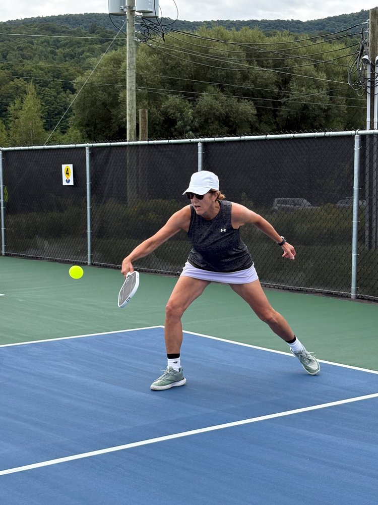

Pickleball, simplement
Le pickleball pour le monde normal
Jouer mieux. Bouger plus. Avoir du fun.
Le pickleball n’a pas besoin d’être compliqué. Ici, on parle de plaisir, de progression, de santé, de sécurité et de bons réflexes sur le terrain — avec juste assez d’humour pour ne pas se prendre trop au sérieux.

Service presque essentiel
Générateur d’excuses
Parce qu’un coup dans le filet mérite parfois une explication très créative — et toujours de bonne humeur.
Ton excuse parfaitement raisonnable apparaîtra ici.